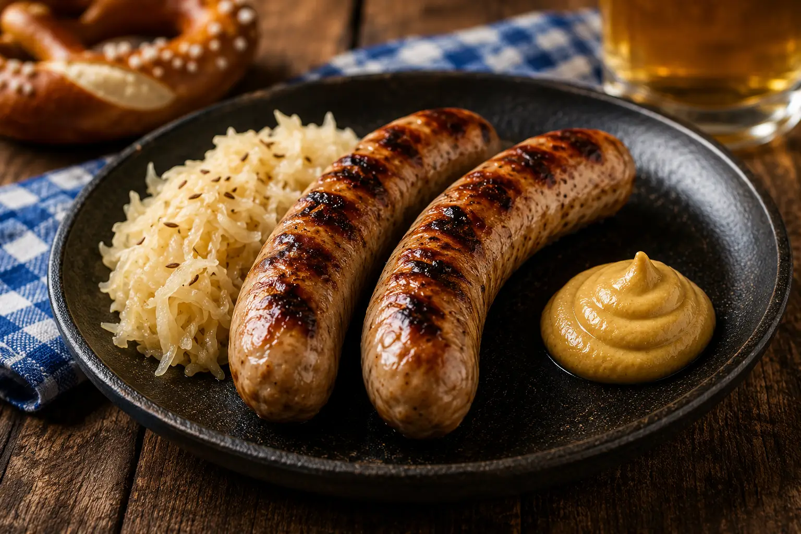
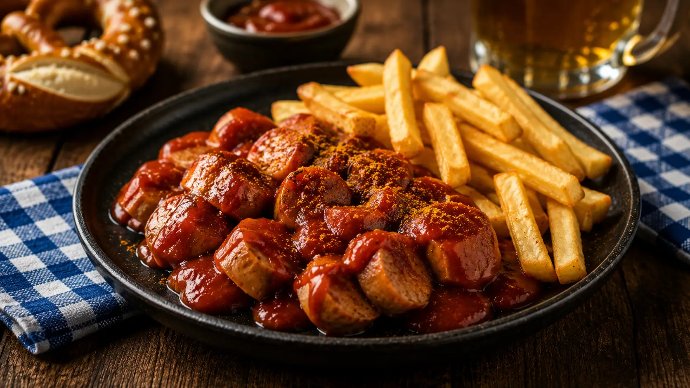
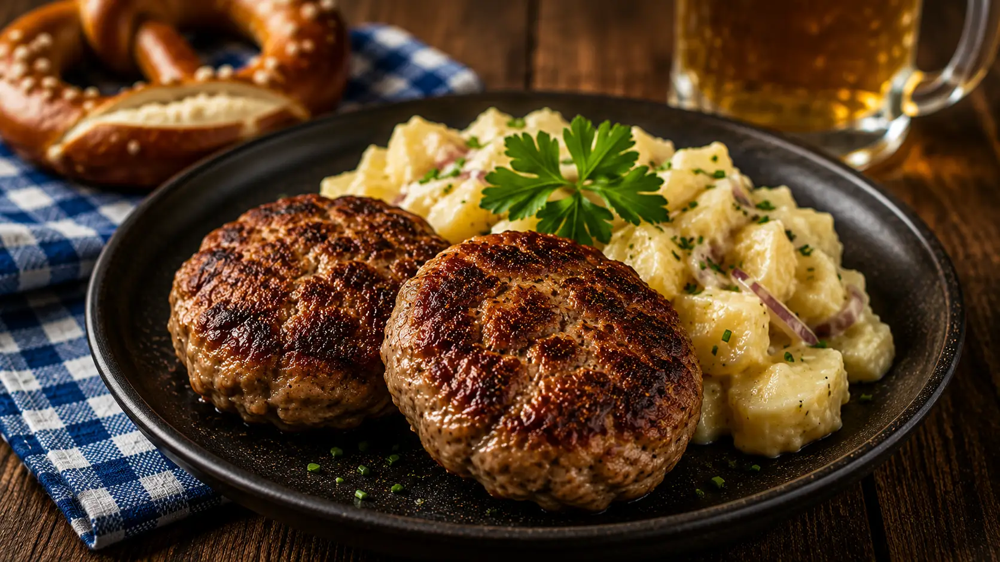
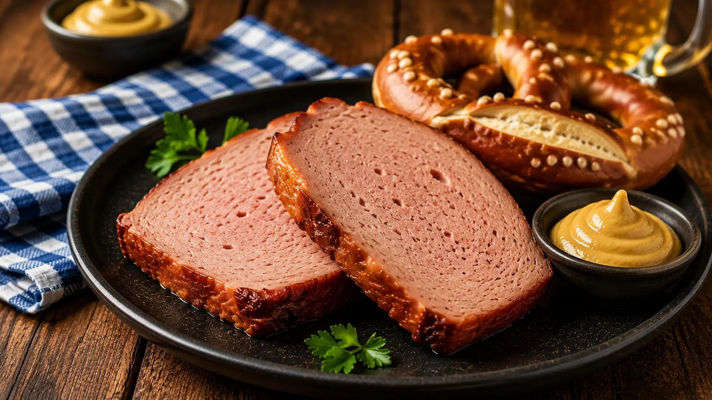
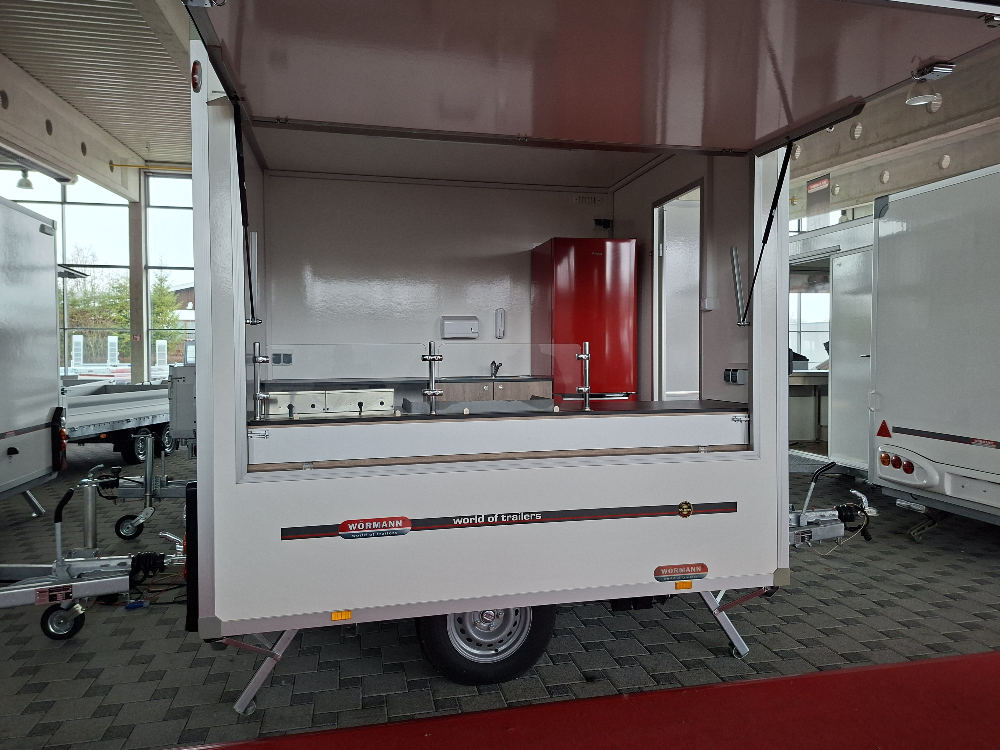

Frisch zubereitet. Ehrlich serviert. Typisch bayerisch.

Knusprig gegrillte Bratwurst mit Sauerkraut und Senf.

Mit hausgemachter Currysauce und knusprigen Pommes.

Nach traditionellem Familienrezept.

Frisch aus dem Ofen mit süßem Senf und Breze.
Frische Zutaten, traditionelle Rezepte und echte bayerische Gastfreundschaft.
Unsere Schmankerl werden täglich frisch zubereitet und mit viel Liebe serviert.
Wir setzen auf hochwertige Zutaten und traditionelle bayerische Rezepte.
Ob Firmenfeier, Geburtstag oder Vereinsfest – wir kommen direkt zu Ihrem Event.
Freundlichkeit, Qualität und ehrliche Gastfreundschaft stehen bei uns an erster Stelle.

Willkommen bei Sandras Schmankerlhütte. Wir stehen für ehrliche bayerische Küche, frische Zutaten und herzlichen Service. Ob Firmenfeier, Vereinsfest, Stadtfest oder private Feier – wir bringen unsere Schmankerl direkt zu Ihren Gästen.
Eindrücke von unserem Imbisswagen, Caterings und frisch zubereiteten Schmankerln.
Egal ob Firmenfeier, Hochzeit oder Vereinsfest – wir beraten Sie gerne persönlich.
📍 Raum München & Umgebung
📞 0176 / 76789591
✉️ info@sandras-schmankerlhuette.de
🕒 Nach Vereinbarung
Jetzt anrufen